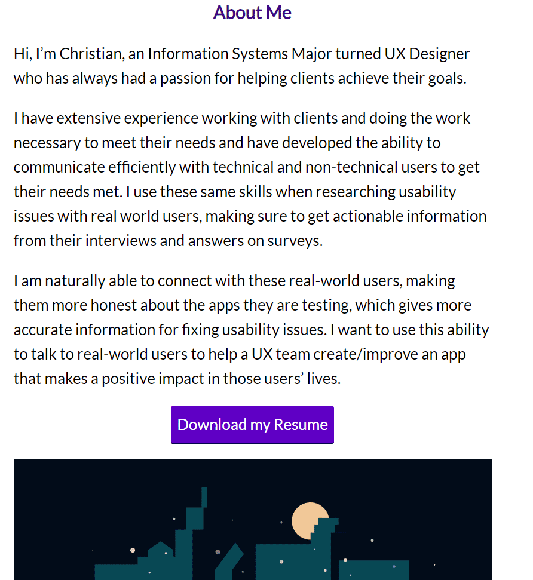

Phlash is a flash card app that allows users to easily create flash card decks for any subject that they want to learn.
I designed and coded a website that primarily displays my prior UX projects. It took about a month total, including usability and accessibility testing.
I needed a website to display my UX design projects. Before creating this website, I did not have a way to show off my prior work to potential employers. This website will make the perfect companion to my resume.
My first attempt at a portfolio website involved using the Adobe Portfolio service, which is a part of my Adobe Creative Cloud subscription. Although the site was easy to set up and display my projects, I was not completely happy with the customization options available. It was after this experience that I decided to custom code my portfolio website. Although there would be much more work up front, I valued the ability to really make this website my own. An additional benefit is that I get to highlight another skill in my personal toolbox.
When considering the design of the site, I thought about its goals. Because they are few and simple, I thought the site should reflect this. The layout should be simple so that the content and information take center stage.
Next, I chose Lato as the one font that I would use on the site because it is simultaneously professional, inviting, and easily readable. I chose a deep purple as the main color with a green as an accent because they both work well when used against a white background.
With the visual design mostly thought out, I started coding the website. I started with the home page. Here is a screenshot of the first iteration, plain html with no styling:
The structure is in place, so I started styling the existing html with css. After some styling, and replacing the project images, the home page looked like this:
Since there were no more major changes to be made to the home page, I started thinking about the inner content pages. Because these pages are text heavy, I wanted them to be easily readable, with the optimal font size and characters per line. With these goals in mind, I chose an 800 pixel container and 26 pixel font size so that the average characters per line would be around 70, which lies in the 45-75 character range per line for great readability.
After the basic css and structure was done, I had to consider how the website would show on smaller devices. Luckily, because my website's layout is simple, I didn't have a lot to adjust to make the website completely responsive. I made media queries that changed font sizes, and made images line up in 2s instead of 4s.
After this, I wanted to add a little personal flair, so on the About Me page under my written description, I added a vector image of my hometown, New Orleans. To add a little extra pizazz, I figured out which parts of the svg code corresponded to the stars in the image and added 3 sets of css animations that gives the effect of them twinkling randomly. I also added one more css animation that cycles the moon's color.
After this, I only needed to make small tweaks: one example was re-cropping the LA NAACP project image so that it matched the other images. I added a simple footer to ease navigation through the site.
After these changes were complete, I held a Usability Test. Participants had no trouble navigating the site and finding different content to complete the tasks given. A majority of feedback given was cosmetic in nature. One good piece of feedback gave me the idea to add a side menu to the project description pages on big screens that enable users to navigate the sections easily.
Here is the home page as of writing this case study:
Here is another one of the project pages, note the amount of characters per line is around 65-75:
Here's the About Me page:
My initial goals were:
According to the results of the Usability Test, the portfolio page is successful.